Encargada de agregar los elementos a la escena. Aquí se puede observar que la luz que se observa en el planeta es renderizada por three.js automaticamente. Aqui también se crea y se agrega a la escena el planeta, dando el radio del planeta como un parametro. Por ultimo, el desarollador original planeaba generar, utilizando tecnicas de generación por precedimientos, un skybox con estrellas.
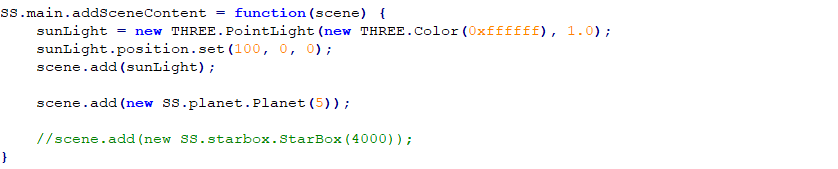Aquí el desarollador se encarga de generar la esfera del planeta. Entre los paramentros entrega: planetScalarField: El mapa de puntos sobre la esfera, generados con una función. planetRadius: El radio del planeta shaderMaterial: La textura del planeta, en una función callback. maxDetail: Una constante que define la maxima calidad de la esfera. true: Una function booleana que NO es utilizada en el objeto Sphere.
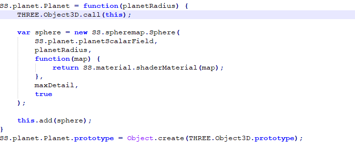Fragment shader se encarga de juntar la informacion del mapa escalar y de la información de la fuente de luz para calcular el color de cada texel.
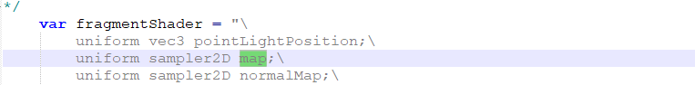 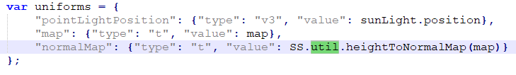Metodos encargados de comunicarse con Three.js para entregarle la información correcta sobre la textura de la esfera. Utiliza el mapa escalar generado al comienzo para realizar los calculos y cambios necesarios.
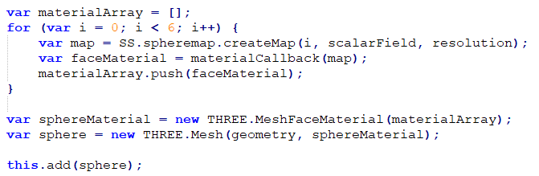 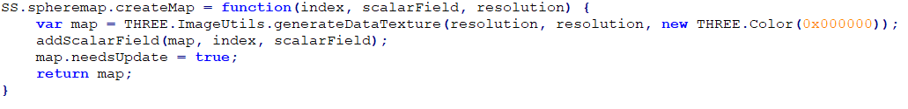 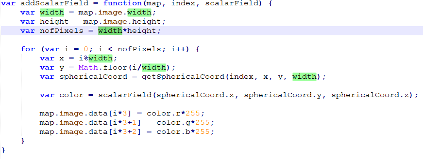 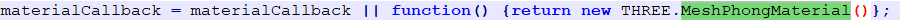El mapa escalar de la textura randomizada se genera por niveles. Cada nivel tiene una resolución predefinida. Utilizando la funcion random4(Un generador automatico de vectores aleatorios), genera los colores en una escala de grises utilizando rgb. Siempre y cuando los 3 numeros sean iguales siempre sera un gris.
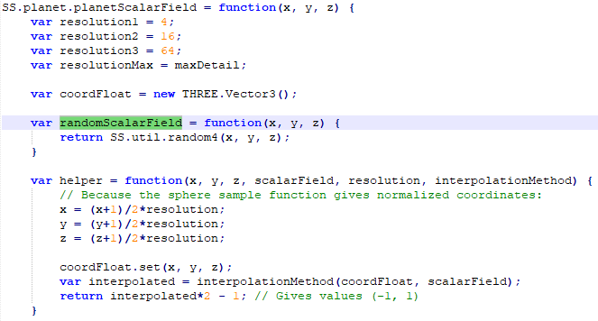 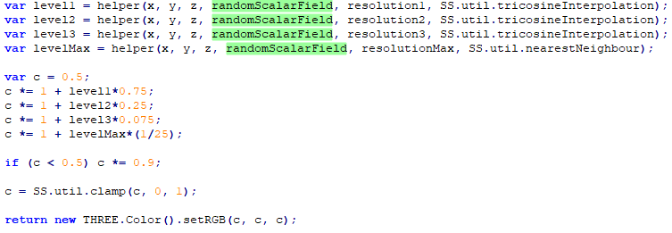 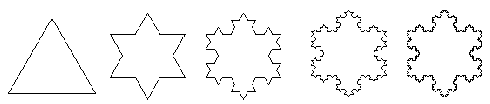